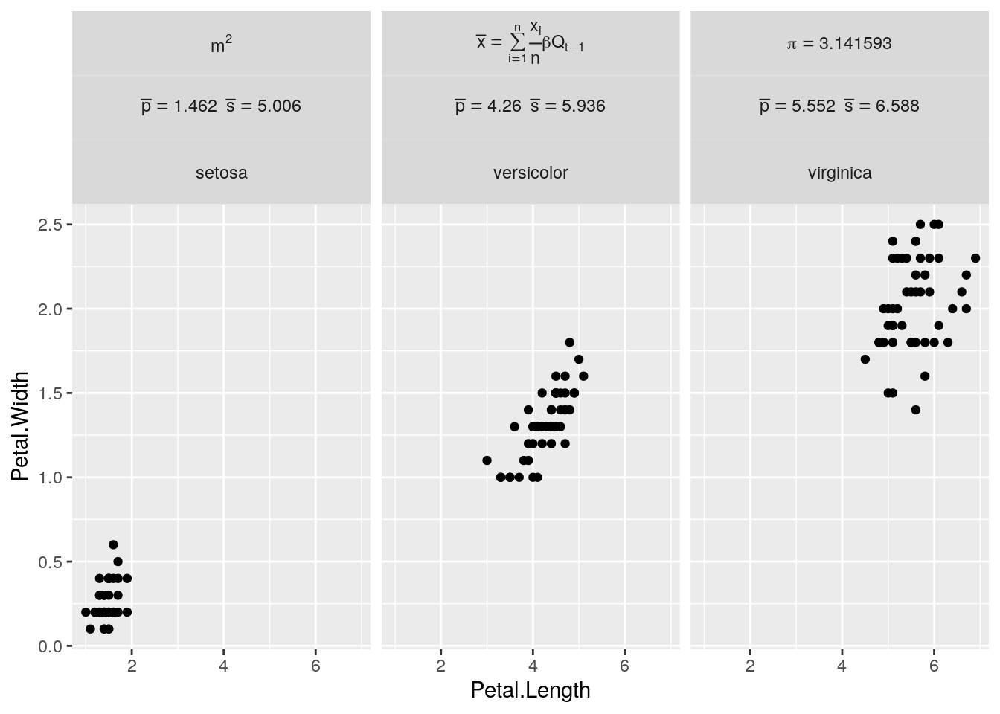

This page is the continuation of my blog post on R commands. On the blog, see also why use R and the RSS feed of posts labelled R.
See also documentation at:
dplyr::case_when is a generalised vectorised if. Example use:
x <- 1:50
case_when(
x %% 35 == 0 ~ "fizz buzz",
x %% 5 == 0 ~ "fizz",
x %% 7 == 0 ~ "buzz",
TRUE ~ as.character(x)
)There are no scalar values in R, only vectors, this makes it very natural to process times series or cross sectional data over many N observations as if we were processing only one instance.
SO answer concerning indexing up to end of vector/matrix “Sometimes it’s easier to tell R what you don’t want”
x <- c(5,5,4,3,2,1)
x[-(1:3)]
x[-c(1,3,6)]x = letters[1:3]
y = letters[3:5]
union(x, y)## [1] "a" "b" "c" "d" "e"intersect(x, y)## [1] "c"setdiff(x, y)## [1] "a" "b"setdiff(y, x)## [1] "d" "e"setequal(x, y)## [1] FALSEMy answer to the question how to reorder factor levels the tidy way
If you happen to have a character vector to order, for example:
iris2 <- iris %>%
mutate(Species = as.character(Species)) %>%
group_by(Species) %>%
mutate(mean_sepal_width = mean(Sepal.Width)) %>%
ungroup()You can also order the factor level using the behavior of the forcats::as_factor function :
"Compared to base R, this function creates levels in the order in which they appear"
library(forcats)
iris2 %>%
# Change the order
arrange(mean_sepal_width) %>%
# Create factor levels in the order in which they appear
mutate(Species = forcats::as_factor(Species)) %>%
ggplot() +
aes(Species, Sepal.Width, color = Species) +
geom_point()Notice how the species names on the x axis are not ordered alphabetically but by increasing value of their mean_sepal_width. Remove the line containing as_factor to see the difference.
Given a list structure x, unlist simplifies it to produce a vector which contains all the atomic components which occur in x.
l1 <- list(a="a", b="2,", c="pi+2i")
str(l1)## List of 3
## $ a: chr "a"
## $ b: chr "2,"
## $ c: chr "pi+2i"unlist(l1) # a character vector ## a b c
## "a" "2," "pi+2i"str(unlist(l1))## Named chr [1:3] "a" "2," "pi+2i"
## - attr(*, "names")= chr [1:3] "a" "b" "c"Extract the first element of a nested list SO
minyearmaxyear <- list(c(2001, 2009), c(2010, 2014), c(2015, 2100))
library(purrr)
map(minyearmaxyear, 1)## [[1]]
## [1] 2001
##
## [[2]]
## [1] 2010
##
## [[3]]
## [1] 2015message("Using the following letters: ", paste(letters, collapse=","), ".")## Using the following letters: a,b,c,d,e,f,g,h,i,j,k,l,m,n,o,p,q,r,s,t,u,v,w,x,y,z.Cf. https://en.wikipedia.org/wiki/Levenshtein_distance
adist("kitten", "sitting")List all available methods for a class:
methods(class="lm") Print the call stack of the last error:
traceback()Print the call stack of the last error in simplified form:
rlang::last_error()Print the full call stack of the last error:
rlang::last_trace()More information on the behaviour of backtrace:
help(trace_back, package=rlang)“Because of lazy evaluation, the call stack in R is actually a tree, which the ‘summary()’ method of this object will reveal.”
List objects in the global environment:
lsList objects coming from a specific loaded package:
ls("package:stats")
ls("package:stats", pattern="smooth")Remove all objects in the environement except one:
rm(list=ls()[!ls()=="object_to_keep"])
rm(list=ls()[!ls()=="con"]) # Remove all except a database connectionGet the current environment
rlang::current_env()I use Vim and the great Nvim-R plugin to edit R markdown documents and R scripts. I browse the table of content of R markdown files with the Voom plugin. I create R packages with Makefiles. I use the fugitive plugin to manage my git commits. See my Vim page for more information.
Rstudio is a great editors for those who prefer a graphical user interface. It has a Vim mode. In fact I trained my muscle memory for Vim movement keys inside RStudio initially. Rstudio also has a lot of menus and buttons to work with Rmarkdown documents, view the state of a git repository and build packages.
getwd()
list.files(tempdir())
dir.create("blabla")Read one csv file with default R function.
read.csv("data.csv", )Read many csv files with functions from the tidyverse packages.
First write sample csv files to a temporary directory. It’s more complicated than I thought it would be.
data_folder <- file.path(tempdir(), "iris")
dir.create(data_folder)
iris %>%
# Keep the Species column in the output
# Create a new column that will be used as the grouping variable
mutate(species_group = Species) %>%
group_by(species_group) %>%
nest() %>%
by_row(~write.csv(.$data,
file = file.path(data_folder, paste0(.$species_group, ".csv")),
row.names = FALSE))Read these csv files into one data frame. Note the Species column has to be present in the csv files, otherwise we would loose that information.
iris_csv <- list.files(data_folder, full.names = TRUE) %>%
map_dfr(read_csv)write_csv returned an Error in write_delim(...) is.data.frame(x) is not TRUE That’s why we used write.csv instead.
RDS is a Serialization Interface for Single Objects. Objects are saved to binary data and compressed to the gzip format, see help(saveRDS) for more details.
Write a dataset to an rds file:
saveRDS(iris, "/tmp/iris.rds")Read a dataset from an rds file
iris2 <- readRDS("/tmp/iris.rds")
identical(iris, iris2)na.contiguous(c(NA,1:3,NA,NA,3:5,NA,NA))
] 1 2 3
tr(,"na.action")
] 1 5 6 7 8 9 10 11
tr(,"class")
] "omit"
tr(,"tsp")
] 2 4 1
na.contiguous(c(NA,1:3,NA,NA,3:6,NA,NA))
] 3 4 5 6
tr(,"na.action")
] 1 2 3 4 5 6 11 12
tr(,"class")
] "omit"
tr(,"tsp")
] 7 10 1Add the first row to the column name, useful for some double headed csv files coming from pandas.
paste(names(df), df[1,])Replace a regular expression with optional numerical pattern and final space
names(df) <- gsub(".per.hectare.[0-9]* *", "_", names(df))|To install R and Rstudio on Debian, see the debian.html#r_and_rstudio page on this site.
To install packages simply enter the following at an R command prompt:
install.packages("package_name")Some packages have dependencies that need to be installed at the OS level. Error messages:
"Configuration failed because libcurl was not found."
"Configuration failed because libxml-2.0 was not found."
"Configuration failed because openssl was not found."Can be solved by installing these dependencies:
sudo apt install libcurl4-openssl-dev
sudo apt install libxml2-dev
sudo apt install libssl-devsessionInfo()
installed.packages()This website is generated from R Markdown documents with:
Rscript -e "rmarkdown::render_site()"The advantage of the rmarkdown site generator is that it creates pages with a floating, foldable table of content. It’s nice for pages that have a lot of subdivisions like this blog. The structure of a website is specified in a yaml file. For example, the code below creates a navigation bar:
navbar:
title: "Paul Rougieux"
left:
- text: "Home"
icon: fa-home
href: index.html
- text: "Tools"
icon: fa-wrench
menu:
- text: "Bash"
href: bash.htmlFor blogs that fit into a book structure, with chapters, the bookdown package create a single clickable table of content for the whole site. It can also export the content to pdf format.
Specifying input from many sub directories in _bookdown.yml:
rmd_files: ["index.Rmd", "chapters/chapt1.RMD", "chapters/chapt2.RMD"]Attention this will only work in the Merge and Knit strategy, as explained in the book chapter on two rendering approaches
“We call these two approaches “Merge and Knit” (M-K) and “Knit and Merge” (K-M), respectively." “K-M does not allow Rmd files to be in subdirectories, but M-K does.”
“Cross-referencing is not provided directly within the base rmarkdown package, but is provided as an extension in bookdown (Xie 2020c). We must therefore use an output format from bookdown (e.g., html_document2, pdf_document2, and word_document2, etc.) in the YAML output field.”
iris %>% head() %>% flextable()This is a reference to flextable @ref(tab:irishead). The chunk name should not contain an underscore, otherwise the cross reference will not work. See bookdown issue 941.
See more flextable caption examples in system.file(package = "flextable", "examples", "rmd", "captions")
The officer package makes it possible to create improved word and powerpoint documents. The flextable package has a few functions to generate tables for word documents (otherwise they look funny).
Before installing flextable, the following system dependencies were required:
sudo apt install libcairo2-dev libjpeg-dev libgif-devInstallation in R:
install.packages("flextable")This is to work with colleagues who are not in the latex/pdf world.
library(officer)
library(flextable)
ft_iris <- iris %>%
head() %>%
flextable() %>%
autofit()
# Add a flex table in landscape format
# Supply document name here, otherwise start an empty doc
doc <- read_docx() %>%
# Portait and landscape sections are defined by their ending
# A portrait section is ending here
body_end_section_portrait() %>%
body_add_flextable(value = ft_iris, split = TRUE) %>%
# A landscape section is ending here
body_end_section_landscape() %>%
print(target = "/tmp/iris.docx")cat(kable(head(iris, 1), format = "html"))## <table>
## <thead>
## <tr>
## <th style="text-align:right;"> Sepal.Length </th>
## <th style="text-align:right;"> Sepal.Width </th>
## <th style="text-align:right;"> Petal.Length </th>
## <th style="text-align:right;"> Petal.Width </th>
## <th style="text-align:left;"> Species </th>
## </tr>
## </thead>
## <tbody>
## <tr>
## <td style="text-align:right;"> 5.1 </td>
## <td style="text-align:right;"> 3.5 </td>
## <td style="text-align:right;"> 1.4 </td>
## <td style="text-align:right;"> 0.2 </td>
## <td style="text-align:left;"> setosa </td>
## </tr>
## </tbody>
## </table>cat(kable(head(iris, 1), format = "latex"))##
## \begin{tabular}{r|r|r|r|l}
## \hline
## Sepal.Length & Sepal.Width & Petal.Length & Petal.Width & Species\\
## \hline
## 5.1 & 3.5 & 1.4 & 0.2 & setosa\\
## \hline
## \end{tabular}cat(kable(head(iris, 1), format = "markdown"))## | Sepal.Length| Sepal.Width| Petal.Length| Petal.Width|Species | |------------:|-----------:|------------:|-----------:|:-------| | 5.1| 3.5| 1.4| 0.2|setosa |Booktabs tables look nicer in latex document, they can be created by specifying the argument booktabs = TRUE into the kable() call.
Knitr adds an extra space every five lines into booktabs tables for readability. This is undesirable for short tables. To remove this space specify the linesep = "" argument to kable() as explained in this SO answer.
Rstudio: R Mardown python engine
Those 2 commands are different. Sets the options for chunk, within a knitr chunk inside the .Rmd document
opts_chunk$set(fig.width=10)Sets the options for knitr outside the .Rmd document
opts_knit$set()Cut a vector in smaller components
cut(0:16, 4)Combine vectors with c()
x <- c(1, 2, 3)
y <- c(4, 5)
c(x, y)Unite multiple columns into one by pasting strings together
df <- expand_grid(x = c("a", NA), y = c("b", NA))
df
df %>% unite("z", x:y, remove = FALSE)
# To remove missing values:
df %>% unite("z", x:y, na.rm = TRUE, remove = FALSE)
# Separate is almost the complement of unite
df %>%
unite("xy", x:y) %>%
separate(xy, c("x", "y"))
# (but note `x` and `y` contain now "NA" not NA)You might want to read the CRAN manual on Writing R Extensions, and its section on Package dependencies. See also Hadley’s book on R package and its section on Namespace
Use the devtools library to start a package folder structure:
devtools::create("package_name")Use git to track code modifications (shell commands):
$ cd package_name
$ git initThe roxygen2 package helps with function documentation. Documentation can be written in the form of comments #’ tags such as @param and @description structure the documentation of each function.
For an introcution to roxygen2, call vignette("roxygen2", package = "roxygen2") at the R prompt.
Since roxygen2 version 6, markdown formating can be used in the documentation, by specifying the @md tag.
Examples are crucial to demonstrate the use of a fonction. They can be specified in a roxygen block called @examples:
#' @examplesWrap the examples in donttest if you don’t want R CMD check to test them at package building time.
#' \donttest{dIt is also possible to wrap them in another statement called dontrun, but this is not recomended on CRAN according to this Stackoverflow question.
Vignettes: long-form documentation
devtools::use_vignette("my-vignette")Where to put package vignettes for CRAN submission
“You put the .Rnw sources in vignettes/ as you did, but you missed out a critical step; don’t check the source tree. The expected workflow is to build the source tarball and then check that tarball. Building the tarball will create the vignette PDF.”
R CMD build ../foo/pkg
R CMD check ./pkg-0.4.tar.gzIssues while building vignette for a packages:
sh: 1: /usr/bin/texi2dvi: not found
sudo apt-get install texinfo
“Maybe you’re running R CMD check using the directory name rather than the .tar.gz file?”
“Installing texlive-fonts-extra should take care of it.”
R CMD checking data for non-ASCII characters found 179 marked UTF-8 strings No solution for this one but I guess it’s ok since it concerns country names?
Back in R, add testing infrastructure:
devtools::use_testthat()When checking the package with R CMD CHECK, How can I handle R CMD check “no visible binding for global variable”? These notes are caused by variables used with dplyr verbs and ggplot2 aesthetics.
It is good to know if your package can be installed on a fresh system. Continuous integration systems make this possible each time you submit a modification to your repository. I have used travis-ci which is free for open github repositories. Instructions to build an R project on travis. Unit tests are also run on travis, in addition to R CMD CHECK.
Package dependencies can be configured in a .travis.yml file that is read by the travis machine performing the build. For package that are not on Cran, it’s possible to specify a dependency field under r_github_packages.
I copied the make file from the knitr package.
Submit package to CRAN The second page will ask to
*.tar.gz file.The maintainer of this package has been sent an email to confirm the submission. After their confirmation the package will be passed to CRAN for review.
In general enter the Git tag after the submission has been completed, because it is very likely that additional information will need to be added to the package before or during the submission process.
geom_bar
geom_tile + a gradient produce heat mapsRotate the tick text of the X axis. SO question rotating axis labels in ggplot2
theme(axis.text.x=element_text(angle = 90, hjust=0))Increase number of axis ticks by specifying an integer break vector
scale_x_continuous(breaks = 1:10)When dates are on the x axis, use a time scale and specify the breaks as a time vector
scale_x_date(breaks = lubridate::parse_date_time(2000:2020, "%y"))Alternatively breaks can be specified as an interval, and minor breaks as well
scale_x_datetime(date_breaks = "5 years", labels = scales::date_format("%Y"), date_minor_breaks = "1 year")Place the legend at the bottom of the plot:
library(ggplot2)
ggplot(iris, aes(Petal.Width, Sepal.Width, color=Species)) +
geom_point() +
theme(legend.position="bottom")Change the name of a particular sub element in the legend:
labs(color="Iris Species")
labs(linetype="Sawnwood product group")Make a multi column legend
library(scales)
plot + # With a fill aeasthetic
guides(fill=guide_legend(ncol = 2))
plot + # with a color aesthetic
guides(col = guide_legend(ncol = 1))See ggplot2 reference guide legend.
library(dplyr)
library(ggplot2)
# Create a first facet variable with examples of math formulas
iris2 <- iris %>%
mutate(species_math = factor(Species,
levels = c("setosa", "versicolor", "virginica"),
labels = c("m^2",
expression(bar(x) == sum(frac(x[i], n), i==1, n) * beta * Q[t-1]),
bquote(pi == .(pi)))))
# Create a second facet variable with mean lengths
# This illustrates how to pass a numeric vector inside a formula
iris_mean <- iris2 %>%
group_by(Species) %>%
summarise(across(ends_with("Length"), mean), .groups="drop")
iris2$mean_length <- factor(iris2$Species,
levels = c("setosa", "versicolor", "virginica"),
labels = mapply(function(p, s) bquote(bar(p) == .(p) ~ bar(s) ==.(s)),
round(iris_mean$Petal.Length,3), round(iris_mean$Sepal.Length,3)))
# Create the faceted plot
iris2 %>%
ggplot(aes(x = Petal.Length, y = Petal.Width)) +
geom_point() +
facet_wrap(species_math ~ mean_length + Species,
labeller = labeller(species_math = label_parsed, mean_length = label_parsed))
As shown in the example above, the labeller can parse:
A character vector such as “m^2” for simple formulas
An expression for more complex math with indices
The output of bquote to include numerical values in the formula. See also this answer on how to use bquote with numerical vectors of more than one value.
see this other answer on how to apply the labeller to one of the faceting variables only. In our case we apply it to the species_math variable only.
The syntax is different from Latex math formulas because label_parsed interprets labels as plotmath expressions. For example indices are written x_i in Latex and x[i] in plot math expressions, and Greek letters are written directly as alpha instead of \alpha in Latex. You can find many formulas in the help page of the plotmath function. Good luck with the plotmath examples.
Minimal theme
theme_minimal()Shape files to make choropleth maps of Europe: GISCO: Geographical Information and maps
Setting up colour palettes in R
To create a RColorBrewer palette, use the brewer.pal function. It takes two arguments: n, the number of colors in the palette; and name, the name of the palette. Let’s make a palette of 8 colors from the qualitative palette, “Set2”.
library(RColorBrewer)
brewer.pal(n = 8, name = "Set2")
[1] "#66C2A5" "#FC8D62" "#8DA0CB" "#E78AC3"
"#A6D854" "#FFD92F" "#E5C494" "#B3B3B3"
palette(brewer.pal(n = 8, name = "Set2"))Use this palette in ggplot2
ggplot(iris, aes(x=Sepal.Length, y=Petal.Length, color=Species)) +
geom_point() +
scale_color_brewer(palette = "Set2")Use a named vector to set a palette in ggplot2 as explained in ggplot2 scale_manual
p <- ggplot(iris, aes(x=Sepal.Length, y=Petal.Length, color=Species)) +
geom_point()
p + scale_colour_manual(values = c(setosa='black', versicolor='red', virginica='green'))Create a named palette using R colour brewer:
species_names <- c("setosa", "versicolor", "virginica")
iris_palette <- setNames(brewer.pal(n=length(species_names), name='Set2'),
species_names)
p + scale_colour_manual(values = iris_palette)Display qualitative palettes:
display.brewer.all(type="qual") Display all palettes
display.brewer.all()ggplot2 text
Use position jitter
# Reduce the number of points so it becomes more readable
iris2 <- iris %>%
group_by(Species, Petal.Width) %>%
summarise(Sepal.Width = mean(Sepal.Width))
ggplot(iris2, aes(x = Petal.Width, y=Sepal.Width, color = Species)) +
geom_text(aes(label = Species), position=position_jitter(width=0.5,height=0.3))Use repulsive textual annotations
ggplot(iris2, aes(x = Petal.Width, y=Sepal.Width, color = Species)) +
ggrepel::geom_text_repel(aes(label = Species))Change the text size
ggplot(iris2, aes(x = Petal.Width, y=Sepal.Width, color = Species)) +
ggrepel::geom_text_repel(aes(label = Species), size=8)Justification
df <- data.frame(
x = c(1, 1, 2, 2, 1.5),
y = c(1, 2, 1, 2, 1.5),
text = c("bottom-left", "bottom-right", "top-left", "top-right", "center")
)
ggplot(df, aes(x, y)) +
geom_text(aes(label = text))
ggplot(df, aes(x, y)) +
geom_text(aes(label = text), vjust = "inward", hjust = "inward")See also the python page for a comparison between pandas methods and R data frames functions.
l = c(1,2,3)
s = l
s[3]
[1] 3
s[3] = "a"
s
[1] "1" "2" "a"
l
[1] 1 2 3Using the address function to see the address of these objects in memory We can see that s and l share the same address. The address only changes when we asign something to s.
library(pryr)
l = c(1,2,3)
s = l
address(l)
[1] "0x316f718"
address(s)
[1] "0x316f718"
s[3] = "a"
address(s)
[1] "0x36a7d30"
s
[1] "1" "2" "a"
l
[1] 1 2 3Checking string objects
bla = "qsdfmlkj"
address(bla)
[1] "0x38e5120"
bli = bla
address(bli)
[1] "0x38e5120"
bli = paste(bli, "sdf")
address(bli)
[1] "0x38d1d60"TODO Compare to the same code in python to see the difference between the above and passing by reference.
The cloudyr project is a collection of R packages to enable cloud computing.
R packages that are actively maintained can be seen on the github project page of cloudyr.
For example the googleCloudVisionR package gets the following image annotations for a picture of golden retriever puppies
description score topicality
Dog 0.9953705 0.9953705
Mammal 0.9890478 0.9890478
Vertebrate 0.9851104 0.9851104
Canidae 0.9813780 0.9813780
Dog breed 0.9683250 0.9683250
Puppy 0.9400384 0.9400384Golden retriever 0.8966703 0.8966703
rocker-org/rocker provides a series of docker images for various R development purposes.
Bioconductor docker intro
“With Bioconductor containers, we hope to enhance Reproducibility: If you run some code in a container today, you can run it again in the same container (with the same tag) years later and know that nothing in the container has changed. You should always take note of the tag you used if you think you might want to reproduce some work later.”
Capture arguments in an Rscript on windows and write them to a file
"C:\Program Files\R\R-3.5.0\bin\Rscript.exe" --verbose -e "args = commandArgs(trailingOnly=TRUE)" -e "writeLines(args,'C:\\Dev\\args.txt')" "file1.csv" "file2.csv" "file3.csv"Arguments can be extracted one by one with args[1] commandArgs() returns a character vector containing the name of the executable and the user-supplied command line arguments.
“Note: Prior to version 0.10.2, Shiny did not support single-file apps and the ui object and server function needed to be contained in separate scripts called ui.R and server.R, respectively. This functionality is still supported in Shiny, however the tutorial and much of the supporting documentation focus on single-file apps.”
library(dplyr)
cars %>%
group_by(speed) %>%
print(n=2) %>% # works because the print function returns its argument
summarise(numberofcars = n(),
min = min(dist),
mean = mean(dist),
max = max(dist)) ## # A tibble: 50 x 2
## # Groups: speed [19]
## speed dist
## <dbl> <dbl>
## 1 4 2
## 2 4 10
## # … with 48 more rows## # A tibble: 19 x 5
## speed numberofcars min mean max
## <dbl> <int> <dbl> <dbl> <dbl>
## 1 4 2 2 6 10
## 2 7 2 4 13 22
## 3 8 1 16 16 16
## 4 9 1 10 10 10
## 5 10 3 18 26 34
## 6 11 2 17 22.5 28
## 7 12 4 14 21.5 28
## 8 13 4 26 35 46
## 9 14 4 26 50.5 80
## 10 15 3 20 33.3 54
## 11 16 2 32 36 40
## 12 17 3 32 40.7 50
## 13 18 4 42 64.5 84
## 14 19 3 36 50 68
## 15 20 5 32 50.4 64
## 16 22 1 66 66 66
## 17 23 1 54 54 54
## 18 24 4 70 93.8 120
## 19 25 1 85 85 85group_by() creates a tbl_df objects which is a wrapper around a data.frame to enable some functionalities. Note that print returns its output on a tbl_df object. So print() can be used inside the pipe without stopping the workflow.
Apply the same transformation to multiple columns, allowing to use select semantics inside summarise and mutate.
cars %>%
group_by(speed) %>%
summarise(across(dist, list(n = length , min = min, mean = mean, max = max)))## `summarise()` ungrouping output (override with `.groups` argument)## # A tibble: 19 x 5
## speed dist_n dist_min dist_mean dist_max
## <dbl> <int> <dbl> <dbl> <dbl>
## 1 4 2 2 6 10
## 2 7 2 4 13 22
## 3 8 1 16 16 16
## 4 9 1 10 10 10
## 5 10 3 18 26 34
## 6 11 2 17 22.5 28
## 7 12 4 14 21.5 28
## 8 13 4 26 35 46
## 9 14 4 26 50.5 80
## 10 15 3 20 33.3 54
## 11 16 2 32 36 40
## 12 17 3 32 40.7 50
## 13 18 4 42 64.5 84
## 14 19 3 36 50 68
## 15 20 5 32 50.4 64
## 16 22 1 66 66 66
## 17 23 1 54 54 54
## 18 24 4 70 93.8 120
## 19 25 1 85 85 85Other examples from the help of the across function
# A purrr-style formula
iris %>%
group_by(Species) %>%
summarise(across(starts_with("Sepal"), ~mean(.x, na.rm = TRUE)))## `summarise()` ungrouping output (override with `.groups` argument)## # A tibble: 3 x 3
## Species Sepal.Length Sepal.Width
## <fct> <dbl> <dbl>
## 1 setosa 5.01 3.43
## 2 versicolor 5.94 2.77
## 3 virginica 6.59 2.97# A named list of functions
iris %>%
group_by(Species) %>%
summarise(across(starts_with("Sepal"), list(mean = mean, sd = sd)))## `summarise()` ungrouping output (override with `.groups` argument)## # A tibble: 3 x 5
## Species Sepal.Length_mean Sepal.Length_sd Sepal.Width_mean Sepal.Width_sd
## <fct> <dbl> <dbl> <dbl> <dbl>
## 1 setosa 5.01 0.352 3.43 0.379
## 2 versicolor 5.94 0.516 2.77 0.314
## 3 virginica 6.59 0.636 2.97 0.322More information in the vignette
vignette("colwise", package="dplyr")The vignette mentions this about rename:
“across() doesn’t work with select() or rename() because they already use tidy select syntax; if you want to transform column names with a function, you can use rename_with().”
Mutate multiple variables in the dataframe at once using the vars() helper function to scope the mutation: Note mutate_at has been superseded by the across function.
iris %>%
mutate_at(vars(starts_with("Petal")), round) %>%
head()## Sepal.Length Sepal.Width Petal.Length Petal.Width Species
## 1 5.1 3.5 1 0 setosa
## 2 4.9 3.0 1 0 setosa
## 3 4.7 3.2 1 0 setosa
## 4 4.6 3.1 2 0 setosa
## 5 5.0 3.6 1 0 setosa
## 6 5.4 3.9 2 0 setosarename_with from the dplyr package can use either a function or a formula to rename a selection of columns given as the .cols argument. For example passing the function name toupper:
library(dplyr)
rename_with(head(iris), toupper, starts_with("Petal"))Is equivalent to passing the formula ~ toupper(.x):
rename_with(head(iris), ~ toupper(.x), starts_with("Petal"))To rename all columns, you can also use set_names from the rlang package. We now use paste0 as a renaming function. pasteO takes 2 arguments, as a result there are different ways to pass the second argument depending on whether we use a function or a formula.
rlang::set_names(head(iris), paste0, "_hi")
rlang::set_names(head(iris), ~ paste0(.x, "_hi"))The same can be achieved with rename_with by passing the data frame as first argument .data, the function as second argument .fn, all columns as third argument .cols=everything() and the function parameters as the fourth argument .... Alternatively you can place the second, third and fourth arguments in a formula given as the second argument.
rename_with(head(iris), paste0, everything(), "_hi")
rename_with(head(iris), ~ paste0(.x, "_hi"))rename_with only works with data frames. set_names is more generic and can also perform vector renaming
rlang::set_names(1:4, c("a", "b", "c", "d"))“Replace numeric values based on their position or their name, and character or factor values only by their name.”
char_vec <- sample(c("a", "b", "c"), 10, replace = TRUE)
recode(char_vec, a = "Apple")Hadley Wickham’s answer to a SO question Why use purrr::map instead of lapply?
Load data
list.files(getwd())
forestEU_wide <- read.csv("Forest-R-EU.csv", stringsAsFactors = FALSE)
head(forestEU)Pivot to long format
# at some pointin the future this will be called pivot_long
forestEU <- forestEU_wide %>%
# select everything except the Year, then pivot all columns and put the value in area
gather(-Year, key = "Country", value = "Area")David Robinson Ten tricks in the tidyverse
S(.*)E(.*) to extract series and episode from a string of the form “S32E44”.Interpolate for one country
country_interpolation <- function(df) {
df <- data.frame(approx(df$Year, df$Area, method = "linear", n=71))
df <- rename(df, Year = x, Area = y)
return(df)
}
forestEU %>%
filter(Country=="Austria") %>%
country_interpolation()Interpolate for all countries Perform the Interpolation on all countries
See documentation in * many models https://r4ds.had.co.nz/many-models.html * blog https://emoriebeck.github.io/R-tutorials/purrr/
forestEU_nested <- forestEU %>%
# Remove empty area
filter(!is.na(Area)) %>%
group_by(Country) %>%
nest() %>%
mutate(interpolated = map(data, country_interpolation))
# forestEU_nested %>% unnest(data)
# Unnest the interpolated data to look at it and plotting
forestEU_interpolated <- forestEU_nested %>% unnest(interpolated)See iris_csv file created in the csv section of this document. Read these csv files into one data frame. Note the Species column has to be present in the csv files, otherwise we would loose that information.
iris_csv <- list.files(data_folder, full.names = TRUE) %>%
purrr::map_dfr(read_csv)#dir.create("output")
forestEU_nested <- forestEU_nested %>%
mutate(filename = paste0("output/", Country, ".csv"),
wrote_stuff = map2(interpolated, filename, write.csv))scatter_plot <- function(data, x, y) {
x <- enquo(x)
y <- enquo(y)
ggplot(data) + geom_point(aes(!!x, !!y))
}
scatter_plot(mtcars, disp, drat)Another example use of metaprogramming to change variables
add1000 <- function(dtf, var){
varright <- enquo(var)
varleft <- quo_name(enquo(var))
dtf %>%
mutate(!!varleft := 1000 + (!!varright))
}
add1000(iris, Sepal.Length)tidyr vignette on tidy data In the section on “Multiple types in one table”:
Datasets often involve values collected at multiple levels, on different types of observational units. During tidying, each type of observational unit should be stored in its own table. This is closely related to the idea of database normalisation, where each fact is expressed in only one place. It’s important because otherwise inconsistencies can arise.
Normalisation is useful for tidying and eliminating inconsistencies. However, there are few data analysis tools that work directly with relational data, so analysis usually also requires denormalisation or the merging the datasets back into one table.
Example use of tidyr::nest() to generate a group of plots: make ggplot2 purrr.
library(tidyr)
library(dplyr)
library(purrr)
library(ggplot2)
piris <- iris %>%
group_by(Species) %>%
nest() %>%
mutate(plot = map2(data, Species,
~ggplot(data = .x,
aes(x = Petal.Length, y = Petal.Width)) +
geom_point() + ggtitle(.y)))
piris$plot[1]
piris$plot[3]
piris$plot[2]Hadley Wickham on a Stackoverflow comment:
“You should never use setwd() in R code - it basically defeats the idea of using a working directory because you can no longer easily move your code between computers. – hadley Nov 20 ’10 at 23:44”